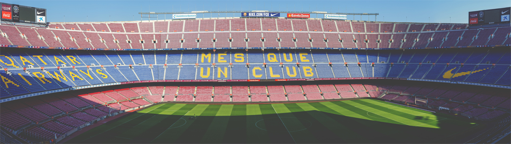

Camp Nou
The Temple of The Football Legends
Camp Nou, the iconic stadium that serves as the home ground for FC Barcelona, stands as a symbol of footballing excellence and rich history. With its immense capacity and passionate atmosphere, it has become a legendary venue in the footballing world.
A Colossal Structure
Camp Nou boasts a colossal seating capacity of approximately 99,354, making it one of the largest stadiums in the world. The sheer size of the stadium is awe-inspiring, providing an unforgettable experience for both players and fans.
Legends and Glorious Moments
Over the years, Camp Nou has witnessed countless historic moments and has been graced by legendary players. From Johan Cruyff and Diego Maradona to Lionel Messi, the stadium has been the stage for breathtaking displays of skill and memorable victories.
The Blaugrana Roar
The atmosphere inside Camp Nou is electric, fueled by the passionate support of the Blaugrana faithful. The chants, cheers, and songs from the stands reverberate through the stadium, creating an unmatched ambiance that motivates the players and strikes fear into the hearts of visiting teams.
A Shrine for Football Devotees
Camp Nou is more than just a stadium; it is a place of pilgrimage for football enthusiasts worldwide. Fans from all corners of the globe flock to this hallowed ground to witness the beauty of the beautiful game and immerse themselves in the storied history of FC Barcelona.
Emblem of Triumph
Throughout its history, Camp Nou has been a venue of triumph for FC Barcelona. Countless league titles, domestic cups, and memorable European nights have unfolded within its walls. The stadium has become a symbol of Barcelona's footballing success and identity.
A Living Legacy
Camp Nou continues to be a revered institution, standing as a living legacy of the club's values and principles. It serves as a constant reminder of the pursuit of excellence, the spirit of teamwork, and the relentless passion that fuels the Barça spirit.
A Must-Visit Experience
For any football fan, a visit to Camp Nou is an essential pilgrimage. Exploring the museum, walking through the player tunnel, and witnessing the grandeur of the stadium firsthand is a surreal experience that leaves an indelible mark on the hearts of those who make the journey.
- Barcelona - Spain.
- 99,354 spectators.
- The biggest Stadium in Spain.